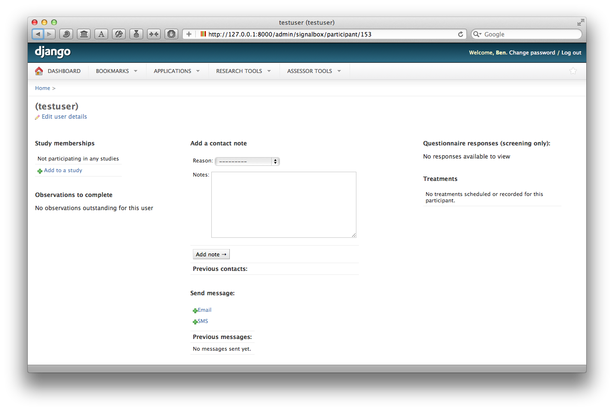

XXX TODO XXX
Add overview here
XXX TODO XXX
Update content below
A Membership links participants – a User – with Study objects. There are two types of memberships possible within a Signalbox study:
| Regular: | This the normal situation, where a participant is simply taking part in a study. |
|---|---|
| Related: | A second kind, where someone is participating in a study not on their own account, but instead to provide data about another participants (e.g. patients, who are the real object of study). An example of this is where a clinician might take part in a sub-study within a trial to complete assessments of patient progress (or, in fact, report on multiple patients). |
In clinical trials, participants may be recruited outside of the web system and added by administrators or researchers (rather than signing up directly online). Where this is the case, participants must be added to studies manually. Participants should be added via the add-participant wizard, available from the Research Tools menu, or at /admin/signalbox/participant/new/.
Once a participant has been added via the wizard, you are redirected to their dashboard page, from where you can add them to a study.
Where the membership is the related type, it’s necessary to fill out the additional relates_to field on the add membership view. To be in the normal situation:
And in the related type of membership:
When a user signs up for a study (or are added by a researcher), then the system may automatically allocate them to a StudyCondition
At present, allocation is made by one of two methods:
Participants are allocated to StudyCondition`s within a :class:-signalbox.models.Study` in the proportions specified by the weight property of each StudyCondition.
For example, if there are 3 Study and have weights 2, 2 and 3, then participants will be allocated.
The other method adapts the randomisation to attempt to balance group sizes:
So, the key thing to remember is to set the randomisation_probability field on the study (or leave it at it’s default) to determine how frequently randomisation should be used, vs. deterministic allocation to the group which least matches the desired size (based on the StudyCondition weights).
If a participant decides to leave the study, but is happy for data provided so far to be used, the best method to pause further observations is to deselect the active checkbox on their membership page. This will prevent all further observations being sent for that study.
.warning:: This will not stop all observations for this participant — only those due for this study (i.e. for the membership). If a participant withdraws from a trial which has multiple sub-studies, be sure to deactivate all of their memberships.
In the case that a person has been randomised to a trial prior to being added to the system, it may be necessary to alter the automatically-generated randomisation_date field on the membership. This can be done through the admin interface: first find the correct membership at /admin/signalbox/membership/ and then edit the property directly.
In other cases a participant may be added to the study and observations added automatically. Sometimes, a participant may need to pause participation in the study, or may not have been added to the study early enough and may need to skip some of the observations a script creates. In these cases, a view is provided to shift the dates of observations which already exist for a membership, to correct the dates forward or backward. This is available at /admin/signalbox/membership/dateshift/(membership_number), or via link on the edit-membership view.